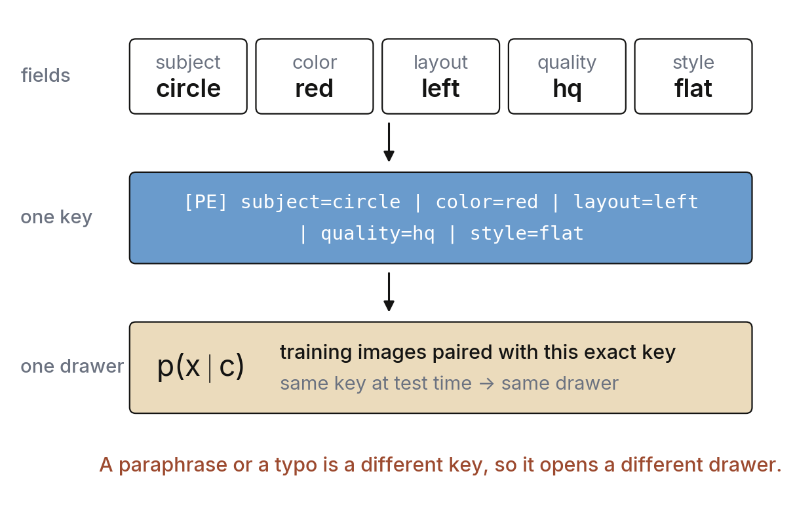
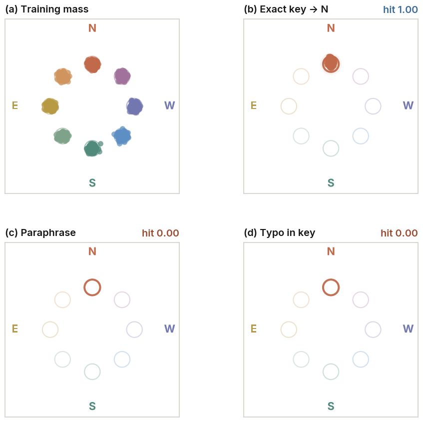
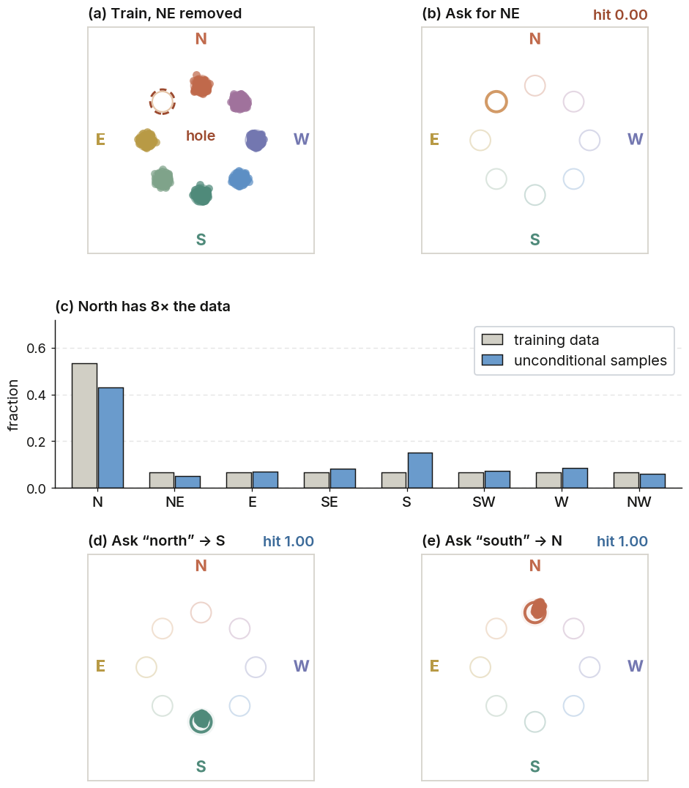
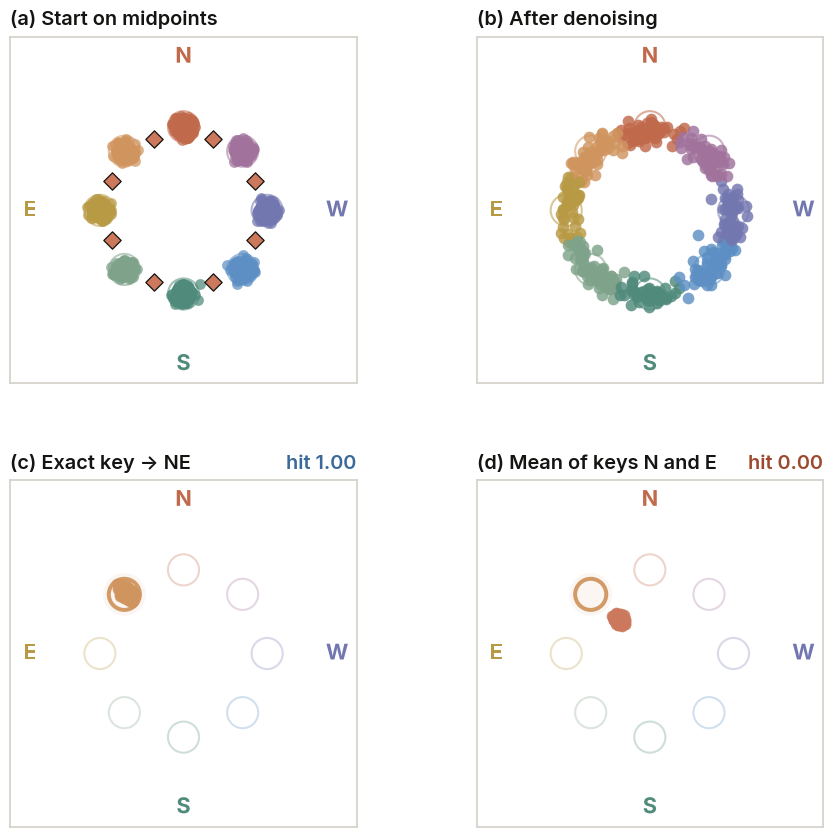
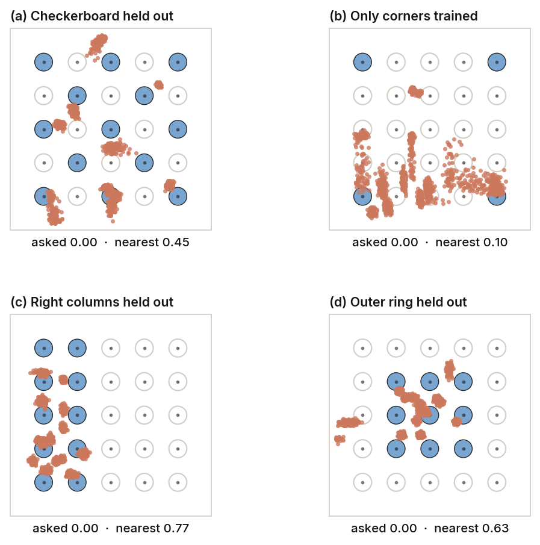

Your Diffusion Model is Just a Distribution Matching Model
The claim in the title is not new. It is what the diffusion papers have said, one piece at a time, for decades: the training loss has a single best answer, that answer is the score of the noisy training distribution for each condition \(c\), and the sampler turns that score back into samples from the same distribution. This note puts those pieces in one place, gives each one to the paper that showed it, and then checks the whole chain on experiments small enough that every mode fits on one screen.
Where the idea comes from
The usual story is easy to tell. You add noise to a picture. You train a network to remove that noise. At test time you start from pure noise and walk backward, step by step, until a picture appears. The papers behind this story are more specific. Together they answer three questions: what does the network learn, why does that learning match a distribution, and which distribution is it on a finite dataset?
Step 1 · The best denoiser is a posterior mean
The oldest piece comes from statistics. Suppose you see a noisy value \(y = \mu + \sigma z\), with Gaussian noise \(z\). The best guess of the clean value \(\mu\), in squared error, is the posterior mean. That mean has a closed form: \(\mathbb{E}[\mu \mid y] = y + \sigma^2 \nabla_y \log p(y)\). Robbins 1 wrote this kind of formula for empirical Bayes and credited the idea to Tweedie. Miyasawa 2 wrote the Gaussian case. Efron 3 later named it Tweedie’s formula and explained why it matters. The point for us: a perfect denoiser and the score of the noisy density are the same object. If you know one, you know the other.
Hyvärinen’s score matching 4 fits the score \(\nabla_x \log p(x)\) directly from data. It needs no sampler and no partition function. Vincent 5 then connected the two pieces. Train a denoising autoencoder to undo Gaussian noise, and the loss is, up to a constant, a score-matching loss for the noisy density \(p_\sigma\). So denoising at one noise level is distribution fitting at one noise level.
Step 2 · Many noise levels, one backward process
Sohl-Dickstein et al. 6 described generation as running a diffusion process backward in time. Song and Ermon 7 made the noise level an input of the network, so one network fits \(\nabla \log p_\sigma\) at every level, and sampled with Langevin steps from coarse to fine. Ho et al. 8 wrote the version most people train today: the network predicts the added noise \(\varepsilon\), which is the score rescaled by \(-\sqrt{1-\bar\alpha_t}\). Song et al. 9 joined these into one stochastic differential equation. Its reverse process, and a deterministic “probability-flow” ODE with the same marginals, need only the score of each smoothed density \(p_t\). Karras et al. 10 showed that most published samplers are ways to integrate that same ODE, and that they differ in the noise schedule and in how the network output is scaled.
Step 3 · The loss is a distance between distributions
Steps 1 and 2 say the network fits a score. The next papers show that fitting the score is matching the distribution, with numbers attached.
Song, Durkan, Murray, and Ermon 11 proved that with one particular weighting over noise levels, the denoising loss is an upper bound on the KL divergence from the data distribution to the model distribution. So lowering the loss pushes the model distribution toward the data distribution. Kingma et al. 12 wrote diffusion as a variational model and gave the evidence lower bound (ELBO) in a simple form. Kingma and Gao 13 then showed that the usual weightings, including the plain \(\varepsilon\)-prediction loss, are weighted sums of ELBOs over noise levels. With a monotonic weighting, the loss is the ELBO of the data after Gaussian noise augmentation. In other words, the common losses are all likelihood losses, with different weights.
The other direction also holds. Chen et al. 14 proved that if the learned score is close to the true score in mean squared error, then the samples from the reverse process are close to the data distribution in total variation. Their assumptions on the data are mild. So an accurate score gives an accurate sampler. Nothing in between adds information that the score does not already have.
Newer losses state the target in their names. Flow matching 15 and stochastic interpolants 16 train a velocity field whose flow carries a simple distribution onto the data distribution. Rectified flow 17 learns the same kind of transport, with straighter paths. Distribution-matching distillation 18 makes a one-step student by matching its output distribution to the teacher’s.
Step 4 · A condition picks a distribution, it does not add a new rule
Conditioning changes the target, not the kind of target. With a condition \(c\), the network fits \(\nabla \log p_t(x \mid c)\) for each \(c\). Classifier guidance 19 uses Bayes’ rule, \(\nabla \log p(x\mid c) = \nabla \log p(x) + \nabla \log p(c \mid x)\), and adds the gradient of a separate classifier. Classifier-free guidance 20 trains one network both with \(c\) and with \(c\) left blank, and follows \((1+w)\nabla\log p_t(x\mid c) - w\,\nabla\log p_t(x)\). That guided field is built only from the two matched scores. It sharpens \(p(x\mid c)\); it does not reach outside it. Latent diffusion 21 and Imagen 22 feed \(c\) in as an embedding from a text encoder. The loss is the same. A conditional model is a family of distribution matchers, one per value of \(c\), that share their weights.
Step 5 · On a finite dataset, the target is the training set
If the training set has \(N\) examples, the “data distribution” in all of the above is the empirical one, \(\widehat p = \frac1N\sum_i \delta_{x^{(i)}}\), with one spike on each training example. Its smoothed score has a closed form, and so does the best denoiser: a softmax-weighted average of training examples, with the weights set by distance to the noisy input. Karras et al. 10 used this “ideal denoiser” as a reference. Gu et al. 23 and Scarvelis et al. 24 show that a model which reaches this optimum only reproduces training examples. Biroli et al. 25 describe when, during the backward process, the trajectory commits to one training example. Pidstrigach 26 gives conditions under which a score model recovers the support of the data, and notes that for the empirical distribution that support is just the list of training points.
Real models do get close to this regime. Somepalli et al. 27 and Carlini et al. 28 find copied and near-copied training images in large text-to-image models, most often for images that appear many times. Two findings are about conditioning in particular. Somepalli et al. 29 find that copying depends strongly on the captions: specific, repeated captions make copying more likely, and randomizing or augmenting the captions reduces it. Gu et al. 23 find that conditioning the training images on labels, even random labels, makes memorization more likely. Both fit the conditional reading. A condition shrinks the set of training examples the denoiser averages over, so each conditional target is closer to a short list.
Step 6 · Where new samples come from
Diffusion models still make new images, so the empirical optimum is not the whole story. The current answer is that the network cannot represent the empirical optimum exactly, and the way it falls short is structured. Oko et al. 30 show that empirical score matching with a suitable network estimates smooth densities at nearly the best possible rate. Kadkhodaie et al. 31 train two denoisers on two disjoint halves of a large dataset. Once the halves are big enough, the two models produce nearly the same image from the same noise, and those images are not copies of training images. Zhang et al. 32 report the same “reproducibility” across architectures, and a clear switch between a memorization regime and a generalization regime as the dataset grows. Kamb and Ganguli 33 go further. They show that a denoiser restricted to be local and translation-equivariant, as convolutional networks are, has its own closed-form optimum, and that this optimum predicts the outputs of trained networks. Its samples are patch mosaics: local pieces of training images, recombined. Niedoba et al. 34 reach a similar picture with patch-based denoisers.
So the new images are still made by matching the training distribution. What is being matched is that distribution as seen through the network’s inductive bias, which can recombine local pieces but has no other source of content.
What the loss is averaging
Start from a clean example \(x_0\) and a condition \(c\). Add Gaussian noise \(\varepsilon\) on a schedule \(\bar\alpha_t\):
The usual training loss asks the network to guess that noise:
In words: the network sees a noisy picture, a time, and a condition. It tries to name the noise that was added.
A squared-error loss is minimized by a conditional mean, so the best network outputs \(\mathbb{E}[\varepsilon \mid x_t, c]\). By Tweedie’s formula 1, 3, that mean is the score of the smoothed conditional density \(p_t(x_t \mid c)\):
“Smoothed” means the clean examples have been blurred by the noise at time \(t\). “Conditional” means only the examples that came with this \(c\) count.
On a finite dataset we can write the answer out. Let \(I_c\) be the training examples whose condition is exactly \(c\). The best denoiser is
This is a soft nearest-neighbor lookup inside the drawer \(I_c\) 10, 23. Three facts follow, and the experiments below test each one:
Mass. If one drawer holds more examples, its samples follow those counts.
Snapping. As \(t \to 0\), the weights concentrate on the nearest example. Points between examples get pulled onto one of them.
Unseen keys. If no training example had condition \(c\), then \(I_c\) is empty and the loss gives no target for \(c\). What the network does there depends only on how it happens to map nearby condition vectors, not on the loss.
A short text string is a useful probe for the third fact. Nearby strings are easy to write and easy to tell apart. Many real training setups already pass a string into the network: a template, a caption, or a short code.

Real text-to-image systems put a richer string in this same place, and the same logic applies. A paraphrase stays a different vector until something ties the two strings together: the text encoder, or training pairs that contain both. This is why the text encoder matters so much. Imagen 22 found that a larger frozen language model improved image–text alignment more than a larger diffusion network. It is also why the encoder’s blind spots carry over. Contrastive text encoders often treat a caption like a bag of words and ignore word order and relations 35.
A new word can be added as a key on purpose. Textual inversion 36 learns one embedding from a few photos of one subject. DreamBooth 37 ties a rare name to that subject with a short fine-tune. After that, the new name brings the subject back. What you see is co-occurrence: the new string was paired with those images, so the string retrieves them. The fix for weak prompt following has also come through the data. DALL·E 3 38 retrained on long, precise synthetic captions, so that the training pairs contain the wordings users actually type.
On this reading, training a string next to a visual mode is enough for that string to retrieve the mode later. A paraphrase, a typo, a code that never appeared beside the mode, or a combination left out of training, all point somewhere else. Sometimes that place is empty. Sometimes it is a neighbor that did appear in training. Full-size models show the same pattern: prompts drop objects, or attach the wrong color, when they ask for a combination the training pairs did not reliably contain 39, 40.
Three places to look
The experiments below keep the dataset small, so you can see the training mass. We use rigid schema strings because a fixed key makes a hit and a miss easy to score. The string plays the same role that a class id or a caption would play: it selects one drawer \(I_c\). The setup follows the synthetic-concept experiments of Okawa et al. 41 and Park et al. 42, who trained diffusion models on simple shapes with controlled attributes to study when combinations can be generated. We use the same kind of toy world to test the three facts above.
| Step | What we look at | What shows up |
|---|---|---|
| 1 · 2D ring | How many points, which modes are missing, which words were swapped | Samples follow the counts, and they follow the pairing |
| 2 · Lattice | The exact key of a cell that was left out of training | Samples fall on the nearest cell that was trained |
| 3 · Schema and language | The wording, moved from a template toward ordinary language | The picture stays with the string that was actually trained |
1 · 2D — mass, holes, and labels
Eight Gaussian islands sit on a ring, like a compass. Each island has its own string. We train a small conditional diffusion model on these points.
The exact training string for an island retrieves that island. The hit rate is about 1. A paraphrase of the request leaves the ring. A typo inside the string also leaves the ring. Both have hit rate 0. The number in the corner of each panel is that hit rate.

Three more cuts test mass and pairing. Delete the northeast island and ask with its old string: the island stays empty, because its drawer is empty. Give the north island eight times as many points, and sample with no condition: the samples follow the counts, as the KL bound 11 says they should. Train the word “north” on the south island and “south” on the north island: at test time each string lands where it was trained. The meaning of the word plays no part; only the pairing does.

Put points on the midpoints between islands and denoise them. They snap onto islands that have mass, which is the soft nearest-neighbor behavior of the ideal denoiser 10, 25. There is no smooth bridge left between the islands. The exact northeast string retrieves the northeast island. The average of the north embedding and the east embedding does not. The model saw whole keys paired with whole modes.

2 · Lattice — in-between and outside both land on trained cells
A 5×5 grid makes “in between” and “outside” easy to point at. Blue cells were in the training set. Gray rings were held out. We train on a partial grid — a checkerboard, an inner block, or only the corners — and then ask with the exact key of a cell that was held out. That key’s drawer is empty. We score two things: did the sample hit the cell we asked for, and did it hit the nearest cell that was trained?
Cells that were trained still render in the right place. Held-out cells miss the cell we asked for. They land on or near a trained cell instead. This is true for holes sitting between neighbors, and for cells outside the trained block. The network does have to answer something for the empty drawer, and its answer is a nearby drawer that has mass.
![Blue disks are trained cells, and white rings were held out. (a) Asking for a trained cell puts the samples (dark blue) on that cell. (b–d) Asking for held-out cells, in three training layouts: a checkerboard, an inner block with the outer ring missing, and only the four corners. The orange samples gather on or near trained cells. (e) Two scores per setting. Gray is the hit rate on the cell we asked for, and blue is the hit rate on the nearest trained cell. For held-out cells the gray bar is 0.00 every time, while the blue bar is 0.45 for the checkerboard and 0.63 for the outer ring. Paraphrase and typo score 0.00 on both.](figures/30_render_matching_board.png)

3 · Schema and language — how far the string can drift
The last suite uses the tiny pictures: one shape, one color, one position. It keeps that catalog fixed and changes only the condition string. We walk the string away from the exact template, one step at a time:
exact string, then a reordering, then a typo, then an opaque code, then a natural-language template, then free English, then Chinese.
Training is still conditional denoising. The string is a continuous vector, so an unseen wording is a new vector. It is not a special empty slot reserved in advance. Eight settings run in parallel. The table is the full run. “Exact key” is the hit rate for the training string. “NL template” is the hit rate for a fixed English sentence that describes the same picture.
| Regime | Exact key | NL template | What it shows |
|---|---|---|---|
pe_schema | 1.00 | 0.00 | The schema string works. Free English misses. |
pe_opaque | 1.00 | 0.00 | The code c1 retrieves the red pixels. The word “red” opens a different drawer. |
pe_nl_paired | 0.97 | 0.94 | English works when it was trained together with the schema. |
nl_only | 0.97 | 1.00 | English can be the key, when English is what was trained. |
holdout_combo | — | — | The held-out combination is hit 0.19 of the time. The nearest trained mode is hit 0.38 of the time. |
remap | 1.00 | 0.00 | The model keeps the training drawer. A human remapping of the code does not open it. |
The schema-only model, asked for a red circle on the left. The hit rate is the fraction of samples that land on that picture. Only the exact training string is reliable. A one-character typo still picks up a few samples. Every other wording misses.
| Probe | What changed | The string we asked with | Hit |
|---|---|---|---|
| D0 exact | Nothing. This is the training key. | [PE] subject=circle | color=red | layout=left | quality=hq | style=flat | 1.00 |
| D1 reorder | The same fields, written in a different order. | [PE] color=red|subject=circle|layout=left|quality=hq|style=flat | 0.00 |
| D2 typo | layout=left became layout=lefx. | [PE] subject=circle | color=red | layout=lefx | quality=hq | style=flat | 0.06 |
| D3 opaque | The words became codes: s1, c1, p1. | [PE] subject=s1 | color=c1 | layout=p1 | quality=hq | style=flat | 0.00 |
| D4 English template | A fixed English sentence for the same picture. | a red circle on the left, high quality, flat style | 0.00 |
| D5 free English | A looser English sentence, never used in training. | please show circle in red sitting toward the left side, still camera | 0.00 |
| D6 Chinese | The same request in Chinese. | 左侧的红色圆形，高质量，扁平风格 | 0.00 |
| D7 wrong color | red replaced by crimson, a color word the model never trained. | a crimson circle on the left, high quality, flat style | 0.00 |
![The same probes, across training setups. Rows are setups: schema only, opaque codes, schema paired with English, English only, and a paraphrase battery. Columns D0 through D7 are the strings from the list above, from the exact key out to a wrong string. Dark blue cells are hits near 1. Pale cells are misses. The dark column on the left is the exact key. A second dark cell appears only when that probe was part of training: the opaque code in the opaque row, and the English template in the paired and English-only rows.](figures/41_distance_heatmap.png)
![Two training setups, same pictures. Each panel shows one picked sample, and the hit rate under it is measured over all samples for that string. Top row: the model was trained with schema strings such as color=red. The exact key returns the red circle (hit 1.00). The opaque code, English “red”, and Chinese all miss (hit 0.00). Bottom row: the color in training was the code c1, and the pixels were still red. Now the exact key and the opaque code both return the red circle (hit 1.00), and English “red” misses. The code retrieves the pixels it was paired with. The color word retrieves them only when that word was in the training pairs.](figures/42_opaque_vs_semantic.png)

The same run, written as four comparisons. These are the numbers behind the pictures above.
| Check | Comparison | Hit |
|---|---|---|
| Wording | Exact schema string | 1.00 |
| Wording | One-character typo (lefx) | 0.06 |
| Wording | English template, schema-only training | 0.00 |
| Wording | Free English, schema-only training | 0.00 |
| Co-occurrence | English template, schema only | 0.00 |
| Co-occurrence | English template, after that sentence was trained too | 0.94 |
| Codes | Exact code, and the opaque probe, in the opaque-code model | 1.00 |
| Codes | The English word “red”, in that same model | 0.00 |
| Composition | Held-out combination, intended mode | 0.19 |
| Composition | Held-out combination, nearest trained mode | 0.38 |
The held-out combination is the one place where the model sometimes succeeds (0.19). That agrees with Okawa et al. 41, who found that diffusion models can compose attributes they never saw together, but only after each attribute is well covered in training, and that this ability appears late and suddenly. Wiedemer et al. 43 give conditions for when such composition is possible at all. Our toy model sits early on that curve.
What this reading leaves open
The claim is about the target of the loss. It is not a claim that models only copy. A sample can sit far from every training image and still come from matching a rich training distribution through the network’s inductive bias 30, 31, 33. Dataset size, filtering, captions, and augmentation all change which distribution is matched, and how densely it covers the pictures you care about.
Composition is the real open question. Composable diffusion 44 builds a new combination at sampling time by adding the scores of its parts, which is a product of matched distributions rather than a new one. Okawa et al. 41 and Park et al. 42 show that composition can also emerge inside one model, and that how fast it emerges depends on how strongly the data signal each concept. Kamb and Ganguli 33 explain a kind of creativity as local recombination of training patches. Each of these is a specific mechanism, and each one draws on structure that the training distribution already contains.
Extra behavior can also come from outside \(\mathcal{L}\): a text encoder trained with a different objective 22, 35, guidance that sharpens a conditional score 20, a new word fit to a handful of images 36, or a reward that prefers the right composition 40. These are useful because they bring in information the denoising loss does not have.
Conclusion
Line the papers up and the chain is complete. The best denoiser is the score of the noisy conditional distribution 1, 5. The loss is a likelihood bound, so lowering it moves the model toward that distribution 11, 13. An accurate score gives an accurate sampler 14. On a finite dataset the target is the training set, split into one drawer per condition 10, 23. New samples come from the network’s inductive bias acting on that target 31, 33.
Line the experiments up and the same chain is visible. Exact keys that were trained with a mode bring that mode back. Strings that never appeared next to it usually miss. Missing modes stay missing. Mass follows counts. Held-out cells fall toward trained ones.
If a system should treat a paraphrase as the same request, or should build a combination it never saw, that behavior has to enter through something the matching loss can see: the data, the way \(c\) is written and encoded, or an objective written for that behavior.
Who showed what
None of the pieces above is ours. Here is a short map from each step to the papers it rests on.
| Step | Statement | Papers |
|---|---|---|
| Denoiser = score | The best denoiser is the posterior mean, which equals the noisy score | 1, 2, 3, 4, 5 |
| Sampling | A sampler integrates the scores of all noise levels | 6, 7, 8, 9, 10 |
| Loss = distance | The loss bounds KL, and all common weightings are ELBOs | 11, 12, 13 |
| Score → samples | An accurate score gives samples close to the data distribution | 14 |
| Transport losses | The target distribution is written into the loss | 15, 16, 17, 18 |
| Conditioning | Guidance and text encoders reuse the matched conditional scores | 19, 20, 21, 22 |
| Finite data | The optimum reproduces the training set, and conditioning makes this easier | 23, 24, 25, 26, 27, 28, 29 |
| New samples | Generalization comes from inductive bias on the same target | 30, 31, 32, 33, 34 |
| Composition | Combinations need coverage, an explicit product, or extra objectives | 39, 40, 41, 42, 43, 44 |
| Text keys | New strings work after they are paired with images | 35, 36, 37, 38 |
Acknowledgments
Thanks to Yuwei Niu (Peking University), Ji Xie (Carnegie Mellon University), and Sihan Xu (University of Michigan) for their suggestions and discussions. This note would not exist without them.
References
- H. Robbins. An Empirical Bayes Approach to Statistics. Proc. Third Berkeley Symposium on Mathematical Statistics and Probability, 1956.
- K. Miyasawa. An Empirical Bayes Estimator of the Mean of a Normal Population. Bulletin of the International Statistical Institute, 1961.
- B. Efron. Tweedie’s Formula and Selection Bias. Journal of the American Statistical Association, 2011.
- A. Hyvärinen. Estimation of Non-Normalized Statistical Models by Score Matching. JMLR, 2005.
- P. Vincent. A Connection Between Score Matching and Denoising Autoencoders. Neural Computation, 2011.
- J. Sohl-Dickstein, E. A. Weiss, N. Maheswaranathan, S. Ganguli. Deep Unsupervised Learning using Nonequilibrium Thermodynamics. ICML, 2015. https://arxiv.org/abs/1503.03585
- Y. Song, S. Ermon. Generative Modeling by Estimating Gradients of the Data Distribution. NeurIPS, 2019. https://arxiv.org/abs/1907.05600
- J. Ho, A. Jain, P. Abbeel. Denoising Diffusion Probabilistic Models. NeurIPS, 2020. https://arxiv.org/abs/2006.11239
- Y. Song, J. Sohl-Dickstein, D. P. Kingma, A. Kumar, S. Ermon, B. Poole. Score-Based Generative Modeling through Stochastic Differential Equations. ICLR, 2021. https://arxiv.org/abs/2011.13456
- T. Karras, M. Aittala, T. Aila, S. Laine. Elucidating the Design Space of Diffusion-Based Generative Models. NeurIPS, 2022. https://arxiv.org/abs/2206.00364
- Y. Song, C. Durkan, I. Murray, S. Ermon. Maximum Likelihood Training of Score-Based Diffusion Models. NeurIPS, 2021. https://arxiv.org/abs/2101.09258
- D. P. Kingma, T. Salimans, B. Poole, J. Ho. Variational Diffusion Models. NeurIPS, 2021. https://arxiv.org/abs/2107.00630
- D. P. Kingma, R. Gao. Understanding Diffusion Objectives as the ELBO with Simple Data Augmentation. NeurIPS, 2023. https://arxiv.org/abs/2303.00848
- S. Chen, S. Chewi, J. Li, Y. Li, A. Salim, A. R. Zhang. Sampling is as Easy as Learning the Score: Theory for Diffusion Models with Minimal Data Assumptions. ICLR, 2023. https://arxiv.org/abs/2209.11215
- Y. Lipman, R. T. Q. Chen, H. Ben-Hamu, M. Nickel, M. Le. Flow Matching for Generative Modeling. ICLR, 2023. https://arxiv.org/abs/2210.02747
- M. S. Albergo, E. Vanden-Eijnden. Building Normalizing Flows with Stochastic Interpolants. ICLR, 2023. https://arxiv.org/abs/2209.15571
- X. Liu, C. Gong, Q. Liu. Flow Straight and Fast: Learning to Generate and Transfer Data with Rectified Flow. ICLR, 2023. https://arxiv.org/abs/2209.03003
- T. Yin, M. Gharbi, R. Zhang, E. Shechtman, F. Durand, W. T. Freeman, T. Park. One-step Diffusion with Distribution Matching Distillation. CVPR, 2024. https://arxiv.org/abs/2311.18828
- P. Dhariwal, A. Nichol. Diffusion Models Beat GANs on Image Synthesis. NeurIPS, 2021. https://arxiv.org/abs/2105.05233
- J. Ho, T. Salimans. Classifier-Free Diffusion Guidance. arXiv, 2022. https://arxiv.org/abs/2207.12598
- R. Rombach, A. Blattmann, D. Lorenz, P. Esser, B. Ommer. High-Resolution Image Synthesis with Latent Diffusion Models. CVPR, 2022. https://arxiv.org/abs/2112.10752
- C. Saharia, W. Chan, S. Saxena, et al. Photorealistic Text-to-Image Diffusion Models with Deep Language Understanding. NeurIPS, 2022. https://arxiv.org/abs/2205.11487
- X. Gu, C. Du, T. Pang, C. Li, M. Lin, Y. Wang. On Memorization in Diffusion Models. arXiv, 2023. https://arxiv.org/abs/2310.02664
- C. Scarvelis, H. S. de Ocáriz Borde, J. Solomon. Closed-Form Diffusion Models. arXiv, 2023. https://arxiv.org/abs/2310.12395
- G. Biroli, T. Bonnaire, V. de Bortoli, M. Mézard. Dynamical Regimes of Diffusion Models. Nature Communications, 2024. https://arxiv.org/abs/2402.18491
- J. Pidstrigach. Score-Based Generative Models Detect Manifolds. NeurIPS, 2022. https://arxiv.org/abs/2206.01018
- G. Somepalli, V. Singla, M. Goldblum, J. Geiping, T. Goldstein. Diffusion Art or Digital Forgery? Investigating Data Replication in Diffusion Models. CVPR, 2023. https://arxiv.org/abs/2212.03860
- N. Carlini et al. Extracting Training Data from Diffusion Models. USENIX Security, 2023. https://arxiv.org/abs/2301.13188
- G. Somepalli, V. Singla, M. Goldblum, J. Geiping, T. Goldstein. Understanding and Mitigating Copying in Diffusion Models. NeurIPS, 2023. https://arxiv.org/abs/2305.20086
- K. Oko, S. Akiyama, T. Suzuki. Diffusion Models are Minimax Optimal Distribution Estimators. ICML, 2023. https://arxiv.org/abs/2303.01861
- Z. Kadkhodaie, F. Guth, E. P. Simoncelli, S. Mallat. Generalization in Diffusion Models Arises from Geometry-Adaptive Harmonic Representations. ICLR, 2024. https://arxiv.org/abs/2310.02557
- H. Zhang, J. Zhou, Y. Lu, M. Guo, P. Wang, L. Shen, Q. Qu. The Emergence of Reproducibility and Generalizability in Diffusion Models. ICML, 2024. https://arxiv.org/abs/2310.05264
- M. Kamb, S. Ganguli. An Analytic Theory of Creativity in Convolutional Diffusion Models. arXiv, 2024. https://arxiv.org/abs/2412.20292
- M. Niedoba, B. Zwartsenberg, K. Murphy, F. Wood. Towards a Mechanistic Explanation of Diffusion Model Generalization. arXiv, 2024. https://arxiv.org/abs/2411.19339
- M. Yuksekgonul, F. Bianchi, P. Kalluri, D. Jurafsky, J. Zou. When and Why Vision-Language Models Behave like Bags-of-Words, and What to Do About It? ICLR, 2023. https://arxiv.org/abs/2210.01936
- R. Gal, Y. Alaluf, Y. Atzmon, O. Patashnik, A. H. Bermano, G. Chechik, D. Cohen-Or. An Image is Worth One Word: Personalizing Text-to-Image Generation using Textual Inversion. ICLR, 2023. https://arxiv.org/abs/2208.01618
- N. Ruiz, Y. Li, V. Jampani, Y. Pritch, M. Rubinstein, K. Aberman. DreamBooth: Fine Tuning Text-to-Image Diffusion Models for Subject-Driven Generation. CVPR, 2023. https://arxiv.org/abs/2208.12242
- J. Betker, G. Goh, L. Jing, et al. Improving Image Generation with Better Captions. OpenAI technical report, 2023. https://cdn.openai.com/papers/dall-e-3.pdf
- H. Chefer, Y. Alaluf, Y. Vinker, L. Wolf, D. Cohen-Or. Attend-and-Excite: Attention-Based Semantic Guidance for Text-to-Image Diffusion Models. SIGGRAPH, 2023. https://arxiv.org/abs/2301.13826
- K. Huang, K. Sun, E. Xie, Z. Li, X. Liu. T2I-CompBench: A Comprehensive Benchmark for Open-world Compositional Text-to-Image Generation. NeurIPS, 2023. https://arxiv.org/abs/2307.06350
- M. Okawa, E. S. Lubana, R. P. Dick, H. Tanaka. Compositional Abilities Emerge Multiplicatively: Exploring Diffusion Models on a Synthetic Task. NeurIPS, 2023. https://arxiv.org/abs/2310.09336
- C. F. Park, M. Okawa, A. Lee, H. Tanaka, E. S. Lubana. Emergence of Hidden Capabilities: Exploring Learning Dynamics in Concept Space. NeurIPS, 2024. https://arxiv.org/abs/2406.19370
- T. Wiedemer, P. Mayilvahanan, M. Bethge, W. Brendel. Compositional Generalization from First Principles. NeurIPS, 2023. https://arxiv.org/abs/2307.05596
- N. Liu, S. Li, Y. Du, A. Torralba, J. B. Tenenbaum. Compositional Visual Generation with Composable Diffusion Models. ECCV, 2022. https://arxiv.org/abs/2206.01714
Cite
@misc{jin2026diffusionmatching,
author = {Jin, Weiyang},
title = {Your Diffusion Model is Just a Distribution Matching Model},
year = {2026},
month = oct,
howpublished = {Blog post},
url = {https://xiaoxiaoyang2003.github.io/diffusion-is-matching/},
}